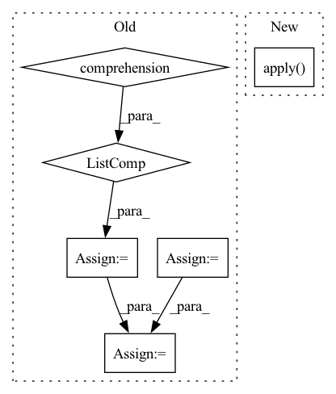

Pattern ID :11351
Before Change
self.LABEL = config["LABEL_FIELD"]
self.embedding_size = config["embedding_size"]
self.field_names = list(dataset.field2id_token.keys())
self.field_dims = [len(dataset.field2id_token[v]) for v in self.field_names]
// todo: para: field2seqlen
// self.field_seqlen = [dataset.field2seqlen[v] for v in self.field_names]
self.field_seqlen = [1 for v in self.field_names]
self.offsets = self._build_offsets()
self.embedding = FMEmbedding(self.field_dims, self.offsets, self.embedding_size)
self.first_order_linear = FMFirstOrderLinear(self.field_dims, self.offsets)
self.fm = BaseFactorizationMachine(reduce_sum=True)
self.sigmoid = nn.Sigmoid()
self.loss = nn.BCELoss()After Change
self.sigmoid = nn.Sigmoid()
self.loss = nn.BCELoss()
self.apply( self.init_weights)
def init_weights(self, module):
if isinstance(module, nn.Embedding):
xavier_normal_(module.weight.data)In pattern: SUPERPATTERN
Frequency: 3
Non-data size: 6
Instances Fragment ID: 38802931
Project Name: rucaibox/recbole
Commit Name: 890ee5d776208a6d3f40775591c13da9b252759b
Time: 2020-07-25
Author: 893833413@qq.com
File Name: model/context_aware_recommender/fm.py
M Class Name: FM
N Class Name: FM
M Method Name: __init__(3)
N Method Name: __init__(3)
M Parent Class: ContextRecommender
N Parent Class: ContextRecommender
M File Name: model/context_aware_recommender/fm.py
N File Name: model/context_aware_recommender/fm.py
M Start Line: 24
M End Line: 36
N Start Line: 24
N End Line: 31
Before Change
// transform them using the id function:
// np.nan != np.nan
// id(np.nan) == id(np.nan) != id(pd.NA)
unique_nans = [x for x in column_data.unique() if pd.isnull(x)]
column_id_counts = column_data.apply(id).value_counts()
nan_counts = pd.Series({nan: column_id_counts[id(nan)] for nan in unique_nans})
column_counts = column_counts.append(nan_counts)
else:
// Get counts of all values in series including NaNsAfter Change
string_null_counts = {value: count for value, count in column_data.value_counts(dropna=True).iteritems()
if string_baseform(value) in null_string_list}
nan_data_counts = column_data[column_data.isna()].apply( nan_type) .value_counts().to_dict()
null_counts = {**string_null_counts, **nan_data_counts}
result_dict[column_name] = {} Fragment ID: 38802919
Project Name: deepchecks/deepchecks
Commit Name: 826ae3a0488300e1c12b760aa877d935d7d25292
Time: 2022-05-24
Author: matan@deepchecks.com
File Name: deepchecks/tabular/checks/data_integrity/mixed_nulls.py
M Class Name: MixedNulls
N Class Name: MixedNulls
M Method Name: run_logic(3)
N Method Name: run_logic(3)
M Parent Class: SingleDatasetCheck
N Parent Class: SingleDatasetCheck
M File Name: deepchecks/tabular/checks/data_integrity/mixed_nulls.py
N File Name: deepchecks/tabular/checks/data_integrity/mixed_nulls.py
M Start Line: 83
M End Line: 109
N Start Line: 83
N End Line: 95
Before Change
self.dropout = config["dropout"]
self.field_names = list(dataset.field2id_token.keys())
num_field = len(self.field_names)
self.field_dims = [len(dataset.field2id_token[v]) for v in self.field_names]
print(self.field_dims)
// todo: para: field2seqlen
// self.field_seqlen = [dataset.field2seqlen[v] for v in self.field_names]
self.field_seqlen = [1 for v in self.field_names]
self.offsets = self._build_offsets()
self.num_pair = num_field * (num_field-1) / 2
self.embedding = FMEmbedding(self.field_dims, self.offsets, self.embedding_size)
self.first_order_linear = FMFirstOrderLinear(self.field_dims, self.offsets)
self.attlayer = AttLayer(self.embedding_size, self.attention_size)
self.p = nn.Parameter(torch.randn(self.embedding_size), requires_grad=True)
self.sigmoid = nn.Sigmoid()After Change
self.sigmoid = nn.Sigmoid()
self.loss = nn.MSELoss()
self.apply( self.init_weights)
def init_weights(self, module):
if isinstance(module, nn.Embedding):
xavier_normal_(module.weight.data) Fragment ID: 38802909
Project Name: rucaibox/recbole
Commit Name: c8ff0206d4f9d04edc6db77eac3bd35040282cfd
Time: 2020-08-15
Author: 893833413@qq.com
File Name: model/context_aware_recommender/afm.py
M Class Name: AFM
N Class Name: AFM
M Method Name: __init__(3)
N Method Name: __init__(3)
M Parent Class: ContextRecommender
N Parent Class: ContextRecommender
M File Name: model/context_aware_recommender/afm.py
N File Name: model/context_aware_recommender/afm.py
M Start Line: 24
M End Line: 40
N Start Line: 24
N End Line: 37